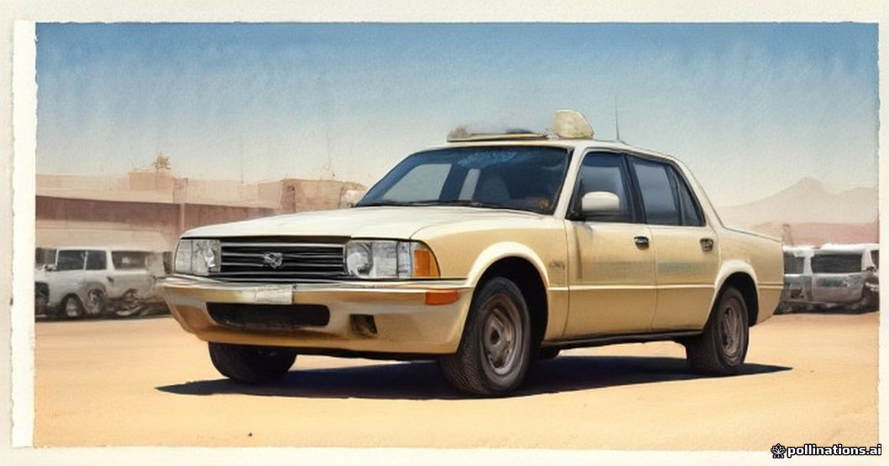

Flight delays into Marrakesh or Fes happen regularly, especially with European short-haul carriers operating tight turnaround schedules. When a delay bumps your arrival past your planned departure window, the domino effect on a Sahara desert itinerary is immediate. A standard 3-day or 4-day tour involves six to eight hours of driving on day one to cross the High Atlas mountains or descend through the Ziz Valley.
Because desert distances in Morocco are fixed, a late start cannot be fixed simply by 'driving faster.' However, missed starts do not have to ruin your trip. As local operators, we deal with delayed arrivals routinely. Here is how schedule adjustments work in practice, what catching up actually costs, and what to do the moment your airline updates your departure time.
Step 1: Contact Your Operator Before You Board
The most critical window for saving your itinerary is before your flight leaves the tarmac. As soon as you suspect a delay that impacts your desert pickup, send your updated flight number and revised arrival time to your tour operator. If you land late at night before a morning tour, we can often shift your pickup back an hour or two without destroying the day's drive.
If your flight is pushed to the morning of your scheduled tour start, the logistics depend heavily on whether you booked a private or shared trip. Early communication allows us to notify hotels along the route, adjust driver rest hours, and stage vehicles at the airport rather than a city riad.
- Provide your exact inbound flight number so we can track live radar data.
- Turn on phone data or connect to airport Wi-Fi immediately upon landing.
- Do not book independent taxi transfers to intermediate towns without coordinating with your driver.
Catching Up: Private Tours vs. Shared Group Tours
The single biggest factor in handling a delay is your tour type. On a private tour, you control the vehicle. If you arrive five hours late on Day 1, your driver can take the express highway to Ouarzazate, skip non-essential sightseeing stops like Kasbah Telouet, and still get you to your night-one hotel safely before late evening.
Shared group tours operate on rigid schedules to protect the experience of other passengers. A shared minibus will depart at its scheduled time (usually between 07:00 AM and 08:00 AM). If you miss it, the group moves on. To rejoin a shared group, you must pay for a private transfer taxi to drive you 4 to 6 hours down the route to catch the group at their night-one hotel.
Shortcut Options: Flying to Errachidia or Direct Transfers
If a major delay wipes out Day 1 completely and you land 24 hours late, driving 9 to 10 hours straight from Marrakesh to Merzouga to catch Day 2 of your tour is exhausting. For private trips, a practical alternative is flying internally from Casablanca to Errachidia Airport (NVG).
Using the /blog-errachidia-airport-shortcut allows you to bypass the mountain pass entirely and land just two hours away from Erg Chebbi. We can reposition your private 4x4 and driver to pick you up at Errachidia, saving you eight hours of severe mountain driving and preserving your night in the desert camp.
Understanding Costs and Travel Insurance Claims
Adjusting a desert itinerary under short notice usually incurs extra costs. These can include empty-bed fees for unused night-one hotels in Dades, emergency driver overtime, additional fuel for express catch-up runs, or domestic flight tickets.
Reputable operators will provide itemized receipts for all unrecoverable costs and new expenses. Having adequate /blog-desert-tour-travel-insurance that covers flight interruption and missed connections is essential, as airlines rarely reimburse secondary ground transport lost due to flight delays.
| Delay Scenario | Private Tour Impact | Shared Group Tour Impact |
|---|---|---|
| 1-3 Hour Delay (Night Before) | Minor adjustment. Morning pickup time shifted slightly. | No impact if arriving the evening before scheduled departure. |
| Morning Arrival (Landing 10 AM) | Direct express drive to Dades; skip sightseeing stops. | Tour departs at 07:30 AM without you. Catch-up taxi required at your cost. |
| 24-Hour Delay (Landing Day 2) | Itinerary restructured; optional flight to Errachidia to salvage desert camp. | Group is already in Merzouga. Catch-up transfer is long and expensive; camp night cut. |
| Flight Cancelled Entirely | Reschedule to new dates subject to vehicle and camp availability. | No refund for missed seats. Rebooking required subject to availability. |

Illustration, not a photograph — for the real thing, you'll have to stand on the ridge yourself.
Quick answers
A few follow-up questions travelers ask about this.
Will a shared desert tour group wait for my delayed flight?
No. Shared group minibuses carry multiple independent travelers and must adhere to strict departure windows to reach intermediate stops before nightfall. They cannot hold the group for individual flight delays.
Can I get a refund for the days I miss due to flight delays?
Tour operators prepay hotels, camps, and driver allocations in advance. While flexible operators will attempt to waive extra charges where possible, non-refundable elements must be claimed back through your travel insurance provider.
What is the best way to catch up with my tour if I land late?
If you land on Day 1 late morning, hire a private grand taxi or driver to meet the tour group at their first evening stop in Ouarzazate or Dades Gorge. Your operator can coordinate the exact location with your catch-up driver.
Planning your own route?
Tell us your dates and what matters to you — we'll answer with a straight recommendation, not a brochure.
Send an inquiry See the itineraries